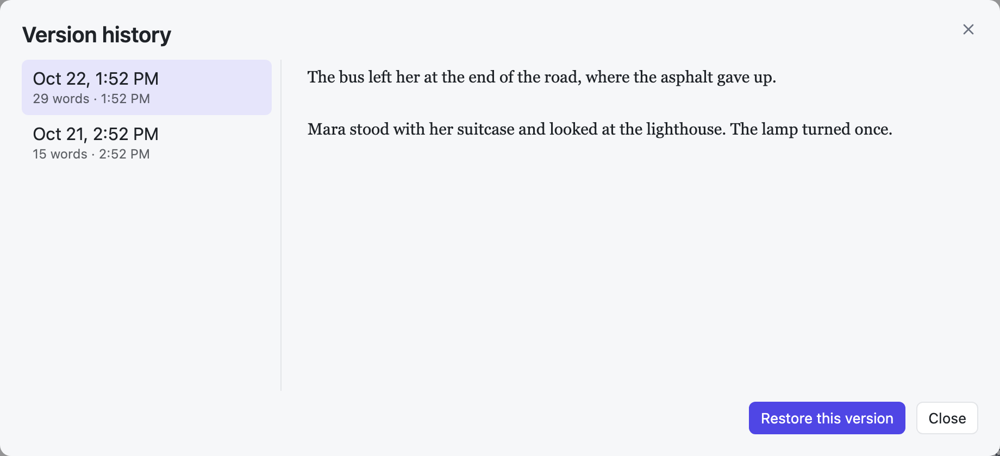
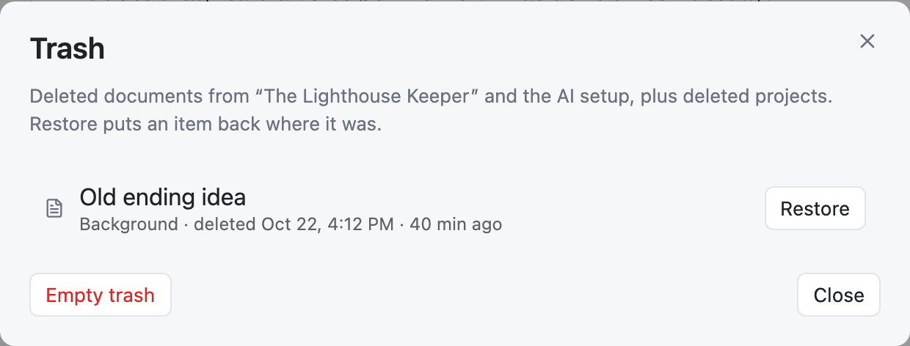

Keeping your work safe
Nothing you write is lost by a crash, a bad save, a wrong click, or another program.
Safe saving
The app writes each save to a new file first and swaps it in only when it is complete. A crash or a full disk can never leave a half-written chapter.
Version history
Before a save changes a document, the app keeps a copy of the old text. It keeps at most one copy every 5 minutes, and the last 50 copies of each document.
To look back, hover over the document in the sidebar and click ⋯ → Version history…

Click a version to read it. Restore this version brings it back. Your current text is kept as a version first, so a restore can be undone too.
The Trash
Deleting never removes anything right away. Deleted documents and projects go to the Trash. Open it from the project ⋯ menu → Trash…

- Restore puts an item back where it was, even inside its old folder. If a new document took its name, the restored one gets a new name, so nothing is overwritten.
- Empty trash deletes everything in the list forever. It asks first.
The Trash shows the open project, the AI setup files, and deleted projects. To see another project's trash, open that project first.
Editing in another program
Your documents are plain files, so you can also edit them in Obsidian or any text editor.
- When you come back to SJB Writer, it reloads a document that changed elsewhere, if you have no unsaved edits.
- If you do have unsaved edits, it tells you. When you save, the other version is kept in Version history first.
- Documents added in the other program appear in the sidebar. Documents removed there disappear from it.
Backups
Your books are ordinary files in your books folder. Back up that folder like any other: with Time Machine, a cloud drive, or Git.